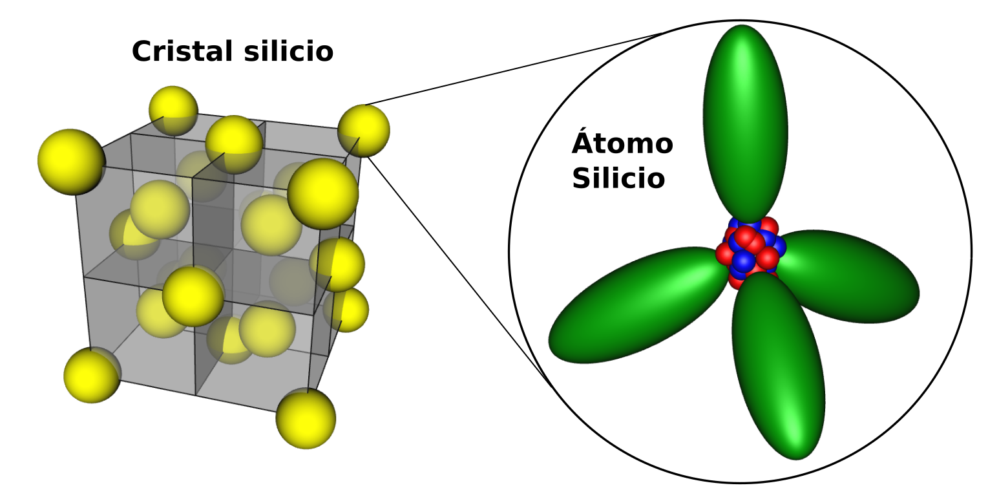
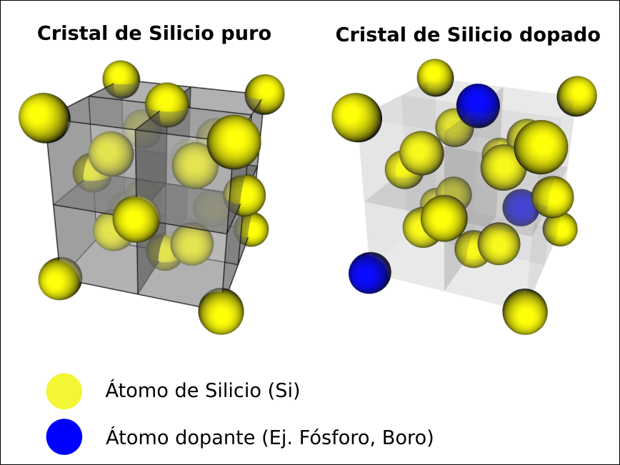

Antes de conocer al diodo, conviene hablar un poco de los materiales semiconductores, como el germanio y, especialmente, el silicio.
Químicamente, coinciden con los semimetales de la tabla periódica, y físicamente, tienen un comportamiento intermedio entre conductores y aislantes. No son ni lo uno ni lo otro, y lo es debido a su estructura atómica.
El silicio puro es poco conductor de la corriente eléctrica. Por eso se le llama semiconductor intrínseco.

Sin embargo, se observa que cuando se le añaden átomos de fósforo o arsénico (en un proceso que se llama dopado), su conductividad eléctrica mejora notablemente. Así, se forma un semiconductor tipo N, que es mejor conductor que el intrínseco.

También se observa que al dopar un semiconductor intrínseco con átomos de boro, galio o talio también mejora su conductividad eléctrica. En este caso se ha construido un semiconductor tipo P.